Dig It Right: Bringing Real-World Archaeology to the Public
- Our project is an archaeology-themed Roblox game called “Dig It Right!”
- Through this project, we had the chance not only to play games, but also to build and code our own.
- We discussed archaeology and our game idea with Dr. Barbara Silber from West Chester University and learned a lot about real archaeology.
- We received valuable feedback for improving the game, such as adding a lab mode.
- We shared our game demo with other kids, and they said they learned new facts about real archaeology.
Identify
• Problem Statement:
Archaeologists lack engaging and accurate tools or media to teach children about the
real scientific work behind archaeology.
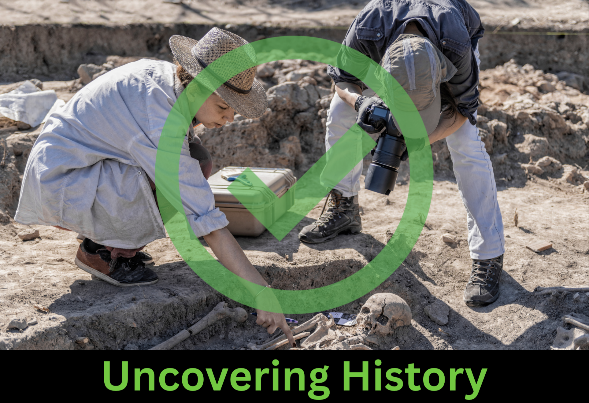
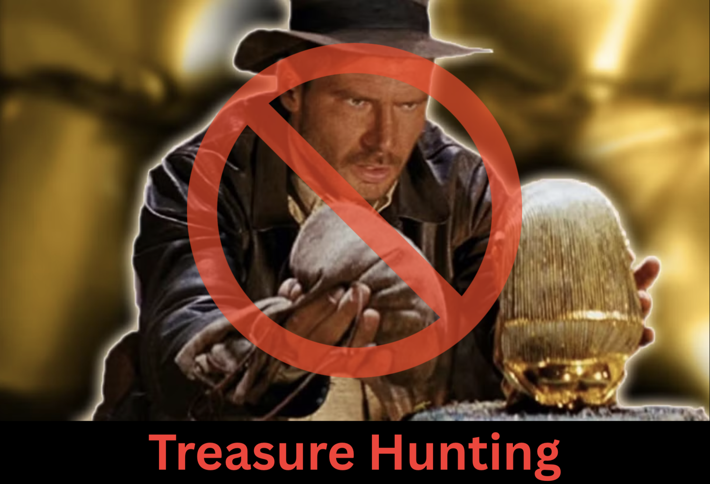
• Impact of Misunderstanding:
Misleading media creates treasure-hunting myths that damage real sites.
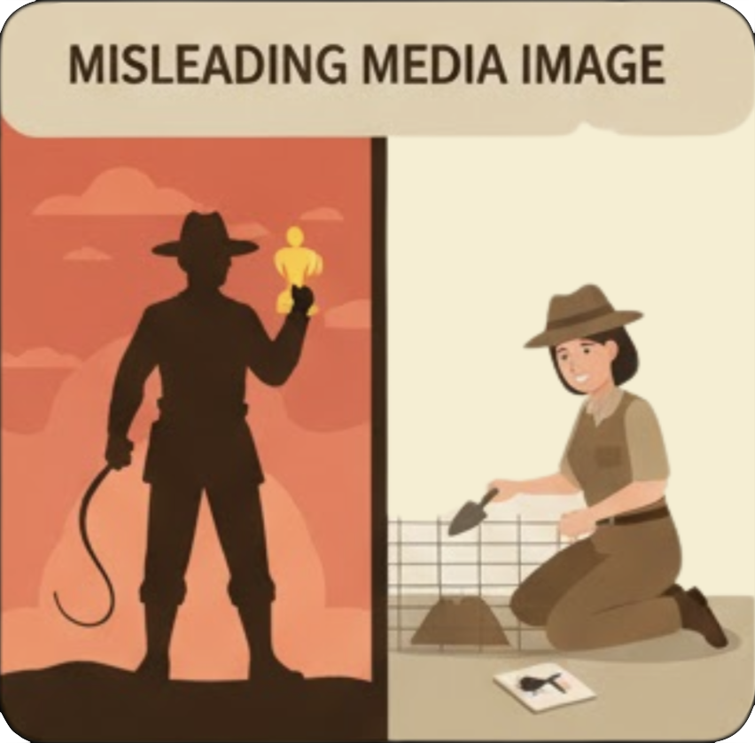
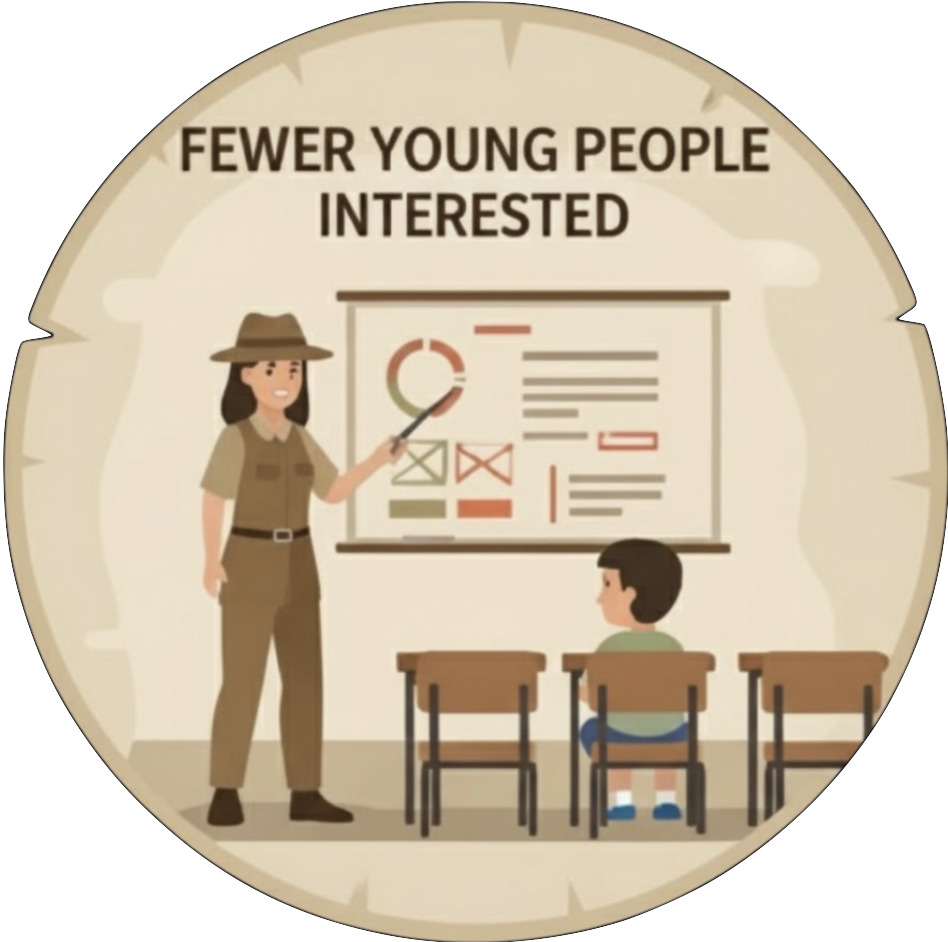
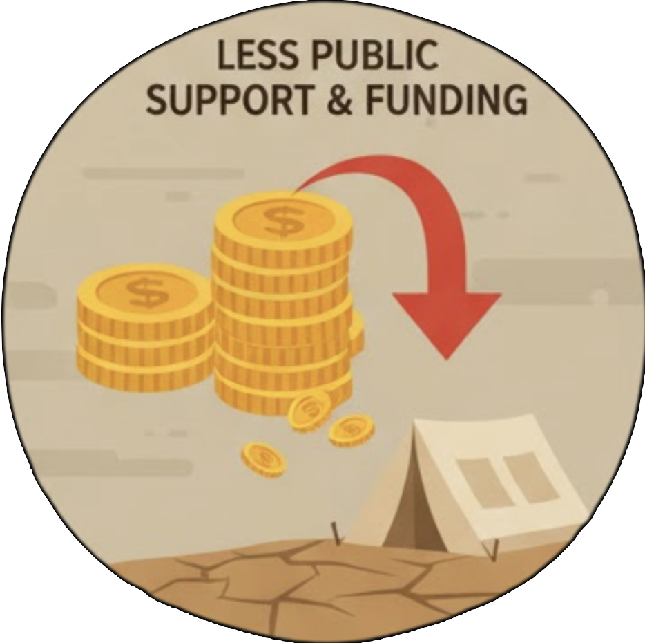
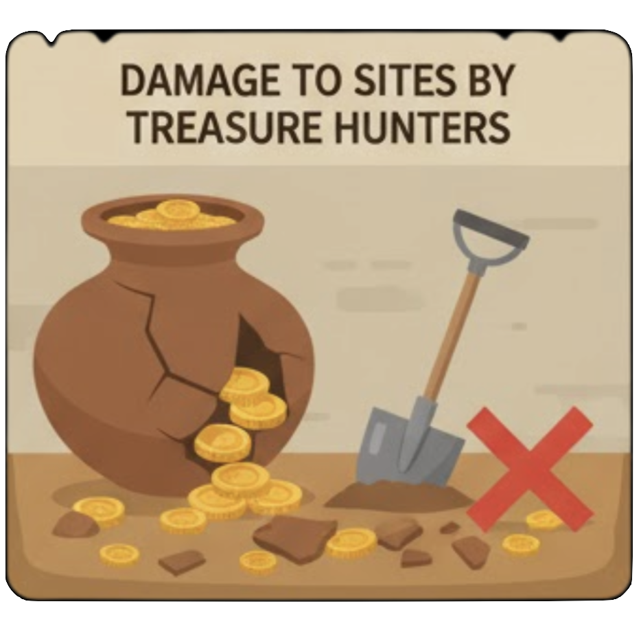
• Our Research from Many Sources:
We took a survey, studied media, learned from museum archaeologists, and
investigated news events to realize how serious the problem is.
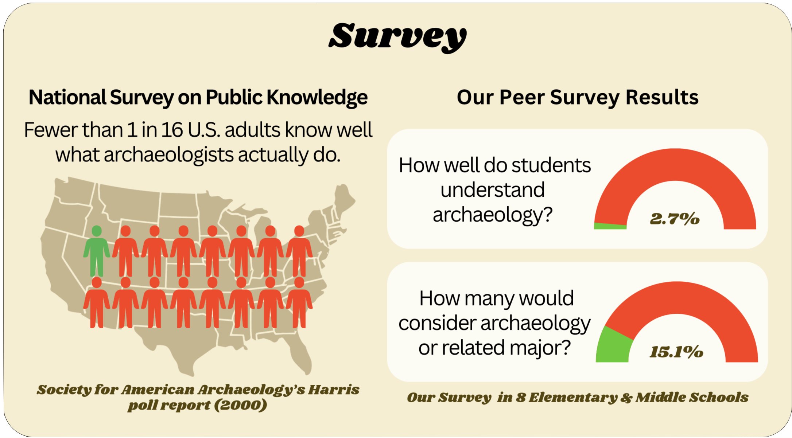
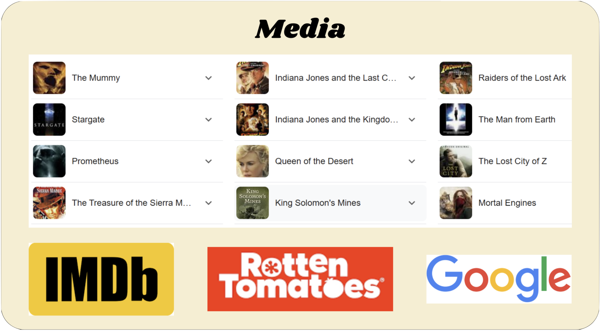
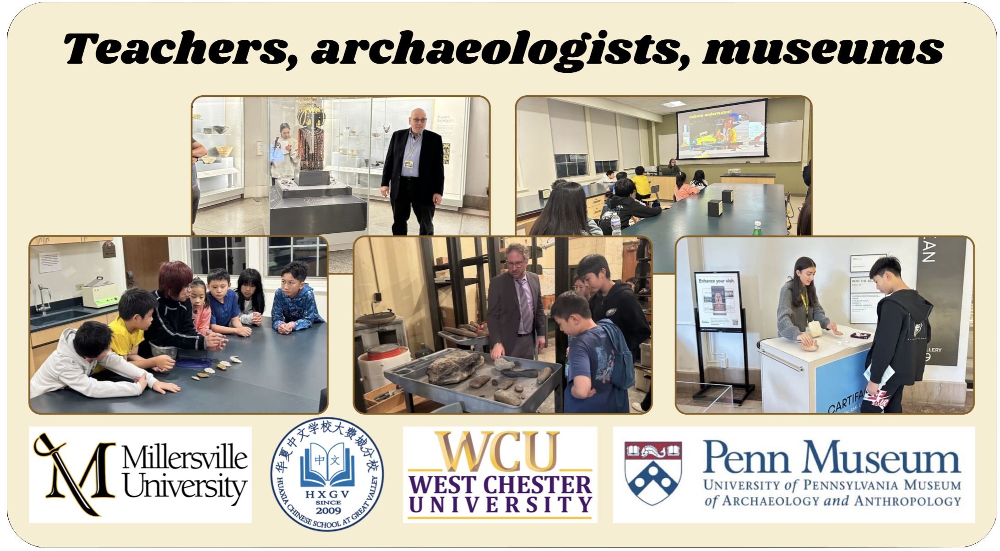
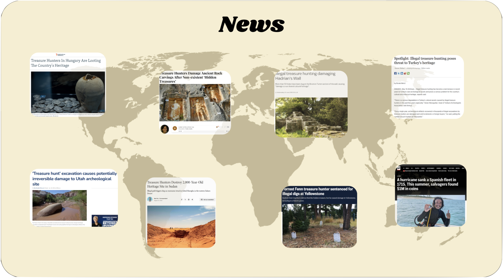
Design
• Process
- We brainstormed multiple ideas as a team.
- Each team member presented their concepts and approaches.
- We voted democratically and the winner is: an archaeology game.
- We researched from various sources to ensure being innovative and possible.
- For solution development, Roblox is the best platform for our plan.
- We met online and in person to finalize the design: Dig-It-Right game.
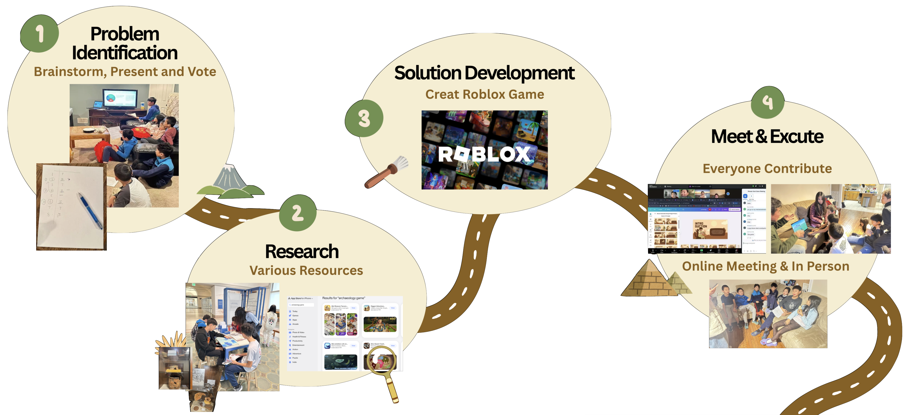
Create
• Features:
We protyped our game innovation to have the following requirements:
- Teaches real archaeology instead of treasure hunting or gold digging like many other games
- Players become archaeologists, exploring dig sites around the world.
- Promotes artifact care: players must protect artifacts, not break them.
- Lets players research artifacts to uncover their history and meaning.
- Designed through real feedback, including input from archaeologists and kids who tested our game.
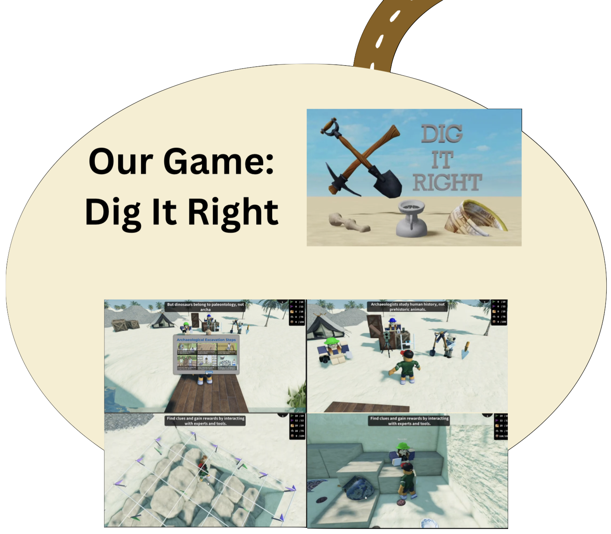
• Game Elements:
Use real tools just like real archaeologists:
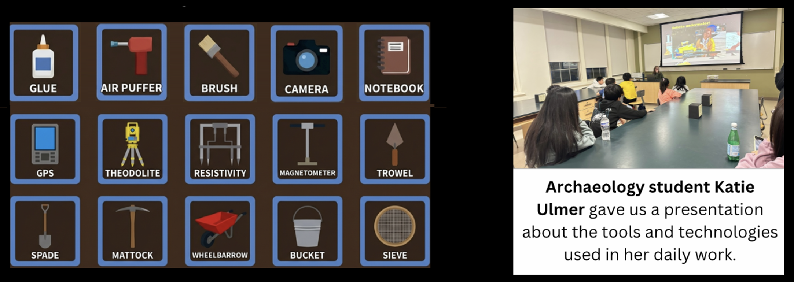
Iterate
• Expert Feedback
Archaeologists provided insight on realistic techniques.
• Improvements
After sharing our first version with archaeologist, we added lab and
library:
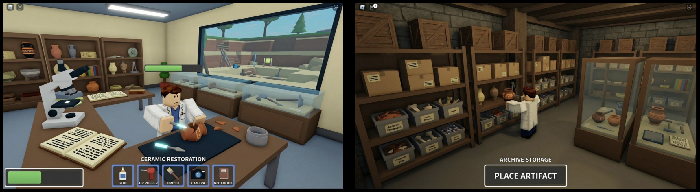
• Communication
• Impact
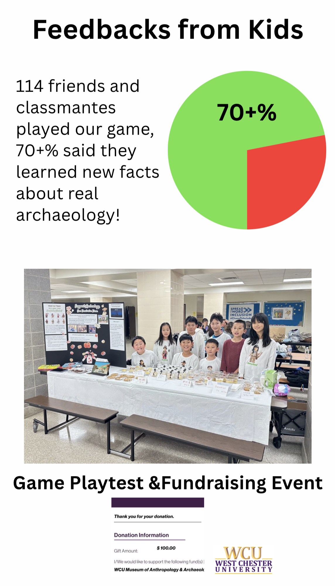
• Reach
Our game transforms archaeology education for kids to learn real skills:
recording data, protecting artifacts, and making scientific decisions.
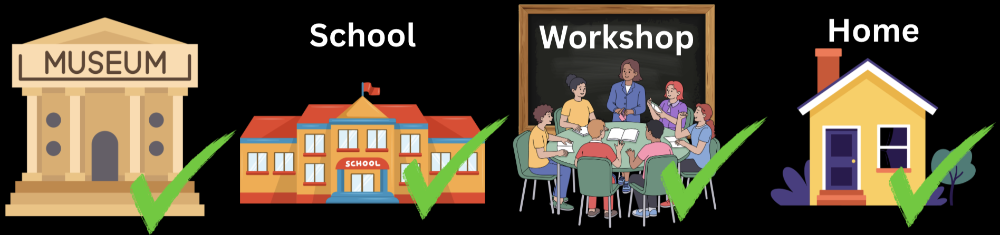
Roblox gives us the power to reach millions:
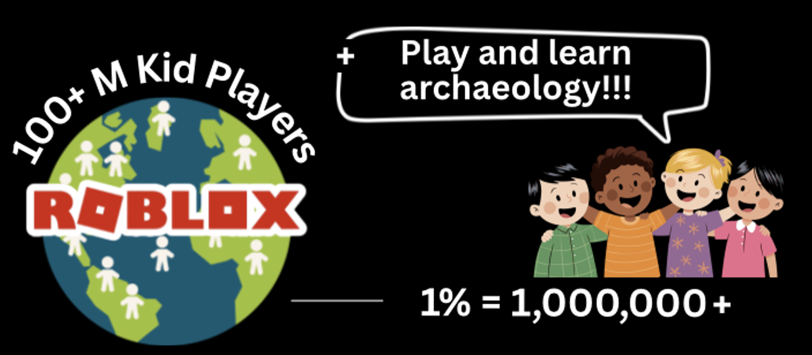